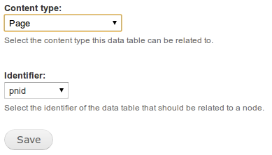

Using the Data Module's "Relate to Node" Functionality
While I'm on the topic of the Data module, I'd like to share my thoughts on some of the confusion surrounding use of the Data Node module included with the package. (see issues 976292 and 898562)
It's my opinion that the bulk of the functionality in the Data Node module has been intentionally "left undone." Instead, the module is giving us the tools to allow us to implement node relationships as needed, ourselves (think API). My thinking is that this was done to allow the maximum amount of flexibility in relating other data to nodes by minimizing assumptions about what the relationship should be. I have in no way validated this with any of the module maintainers, nor is it denoted in any documentation that I am aware of. What follows is my "average" use case for this module, and some thoughts on more advanced implementations.
When enabled, this functionality is apparent in Drupal's admin UI at admin/build/data/edit/%table_name/node by clicking on the edit link next to a table at admin/build/data/overview then clicking the "Relate to Nodes" tab. This page presents a form asking you which content type you would like the table related to, and the column name of the id key in the table you are referencing. Simple right? Well sorta... When you submit this form and happily skip over to views to reference the node table, it quickly becomes apparent that nothing has happened. Checking the data_table_node table in the database will reveal it to be empty. So what's up here? Is this just an unfinished piece?
After taking a look in the data_node.module things start to make a bit more sense. At first glance we see some tantalizing functions, especially:
* Add a relationship between a data table and a node.
*/
function data_node_add($table, $id, $nid) {
$save = array(
'data_table_name' => $table->get('name'),
'id' => $id,
'nid' => $nid,
);
return drupal_write_record('data_table_node', $save);
}
/**
* Remove a relationship between a data table and a node.
*/
function data_node_remove($table, $id, $nid) {
db_query("DELETE FROM {data_table_node} WHERE data_table_name = '%s' AND id = %d AND nid = %d", $table->get('name'), $id, $nid);
}
Typically I'll stop right here. I really only use the Data module for custom reporting, and when doing so I handle the CRUD functions for the new data type myself. My data type's row reference to nodes are nearly always a 1 to 1 mapping. To further simplify things for myself, the $id I use in my custom data type is often the node id of it's intended reference. This makes my calls to these functions look something like:
...
//inform Data Node of the reference
$my_table_object = data_get_table('my_table');
data_node_add($my_table_object, $nid, $nid);
This will populate the data_table_node table so that when we use the relationship in out data type view it will return results. Of course deletion will be handled similarly.
This is admittedly a somewhat basal interaction with this module, though it is often enough to satisfy my needs. However Data Node allows for much more complexity and has a certain level of user interaction built in just below the surface.
It's not until we start thinking about the data structures involved that the scope of the allowed complexity becomes apparent. It is easy to assume that referencing a data type to a node is always going to be 1 to 1 (much like the typical use of CCK's Node Reference.) However, this may not always be the case. It is not required that the data table's id be the nid of the node it is referencing. It only has to be unique within the table. Because of this, a large field of possibilities emerge. You may have data type rows referencing many nodes each (1 to many), many data type rows referencing a single node (many to 1), or, of course, any number of data type rows referencing any number of nodes (many to many). The data_table_node table along with the provided CRUD functions, like the ones mentioned above, will allow for this. I think that this flexibility is a big reason that the module has been left so open.
Lastly, a closer look at the Data Node module will reveal some rather fancy display functions for the underlying relationship CRUD.
* Render an add link for a given item..
*/
function data_node_render_add_link($table, $id, $nid) {
drupal_add_css(drupal_get_path('module', 'data_node') . '/data_node.css');
drupal_add_js(drupal_get_path('module', 'data_node') . '/data_node.js');
$title = _data_node_get_title($nid);
$table_name = $table->get('name');
$class = "data_node_link-{$table_name}-{$id}-{$nid}";
return l(t('Add to !title', array('!title' => $title)), data_node_add_path($table, $id, $nid), array('attributes' => array('class' => "data-node-add $class"), 'query' => drupal_get_destination()));
}
/**
* Render a remove link for a given item.
*/
function data_node_render_remove_link($table, $id, $nid) {
drupal_add_css(drupal_get_path('module', 'data_node') . '/data_node.css');
drupal_add_js(drupal_get_path('module', 'data_node') . '/data_node.js');
$title = _data_node_get_title($nid);
$table_name = $table->get('name');
$class = "data_node_link-{$table_name}-{$id}-{$nid}";
return l(t('Remove from !title', array('!title' => $title)), data_node_remove_path($table, $id, $nid), array('attributes' => array('class' => "data-node-remove $class"), 'query' => drupal_get_destination()));
}
These are the two pertinent functions. They both return a link that will hit a page callback to do just what you would expect. Add or remove a node relationship. This allows you "expose" the functionality to the user. The link could be placed on a view or node page to allow users to add or remove the relation to a specific data type themselves, "on the fly". This, in combination with the flexibility of the relationship itself, lends to a huge variety of possible use cases with relatively few function calls.
So wrapping this up. Data Node module is best thought of as an API. It doesn't do so much right out of the box, but with minimal implementation it becomes a fairly powerful tool.